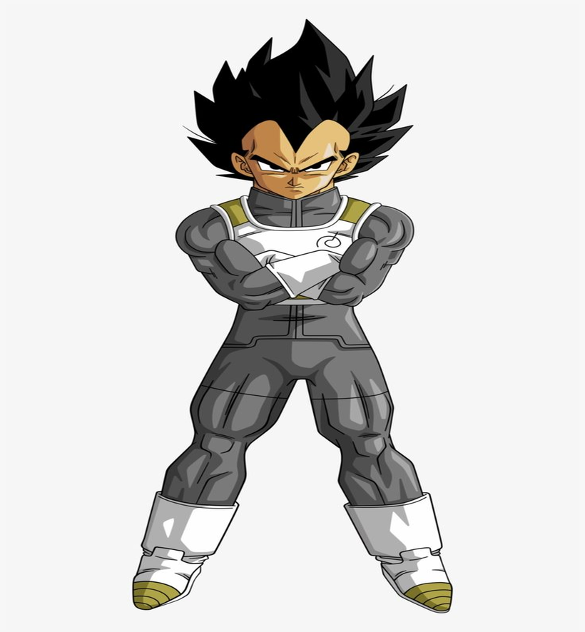
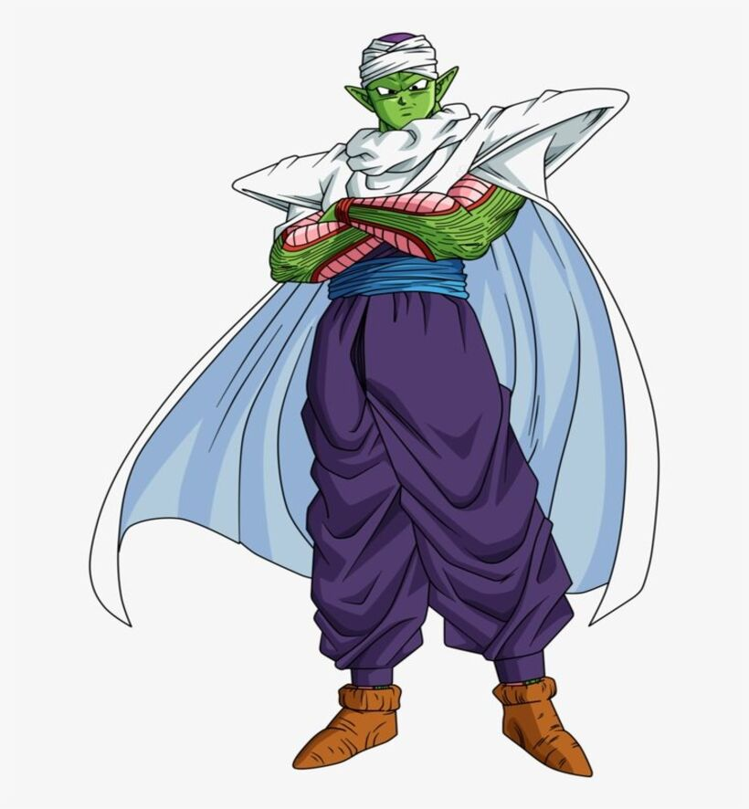

Historia
Dragon Ball sigue las aventuras de Goku desde niño, explorando el mundo en busca de las esferas del dragón. La serie se divide en varias partes: Dragon Ball, Dragon Ball Z, Dragon Ball GT y Dragon Ball Super.
Personajes principales

Goku
El protagonista principal, un Saiyajin criado en la Tierra, conocido por su fuerza y corazón puro.

Vegeta
Príncipe Saiyajin, rival y aliado de Goku, conocido por su orgullo y fuerza implacable.

Piccolo
Guerrero Namekiano, mentor y aliado importante para Goku y sus amigos.
Sagas
- Saga Saiyajin: Introducción a los Saiyajin y llegada de Raditz.
- Saga Freezer: Batalla en Namek y enfrentamiento con Freezer.
- Saga Cell: Pelea contra los androides y Cell.
- Saga Majin Buu: Última gran saga de Dragon Ball Z.
- Dragon Ball Super: Nuevas batallas, dioses y universos alternativos.
Técnicas y Transformaciones
- Kamehameha: Técnica de energía creada por el Maestro Roshi.
- Genkidama: Bola de energía creada con la energía de seres vivos.
- Super Saiyajin: Transformación que aumenta el poder de los Saiyajin.
- Ultra Instinto: Técnica avanzada que aumenta reflejos y poder.